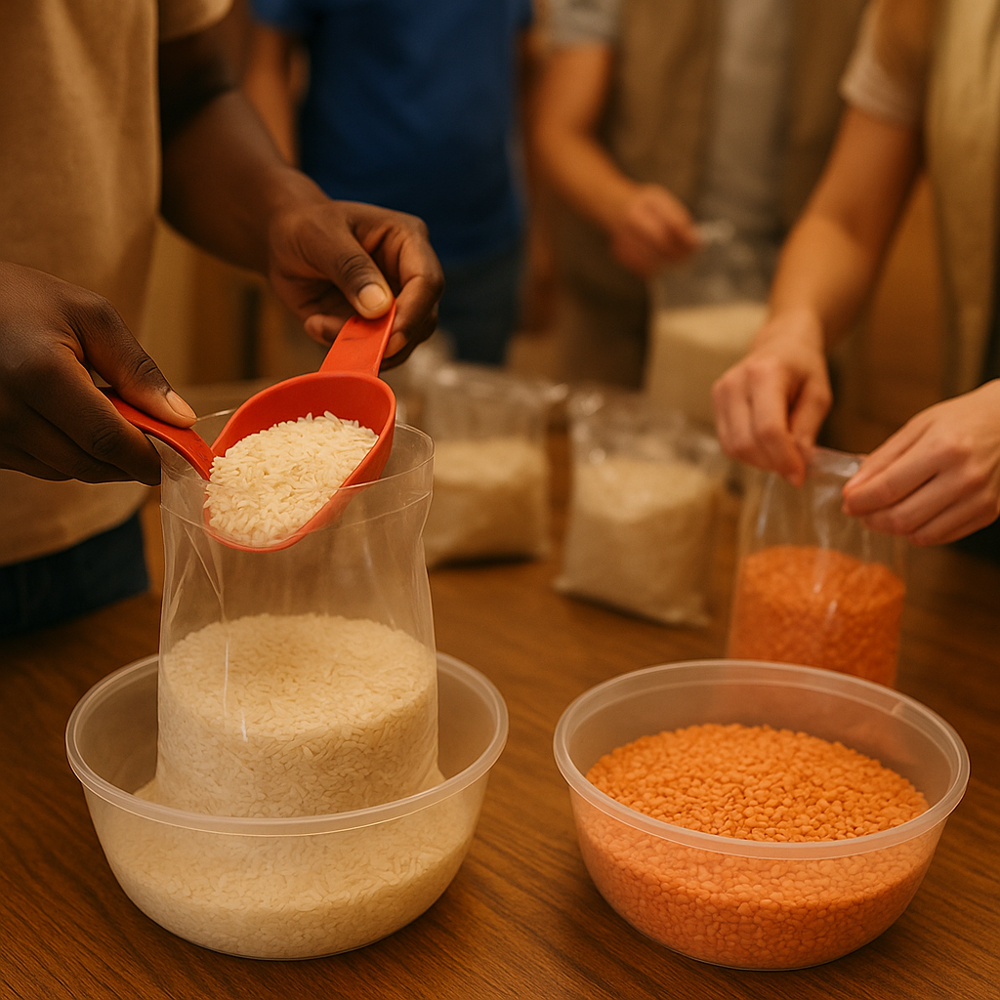
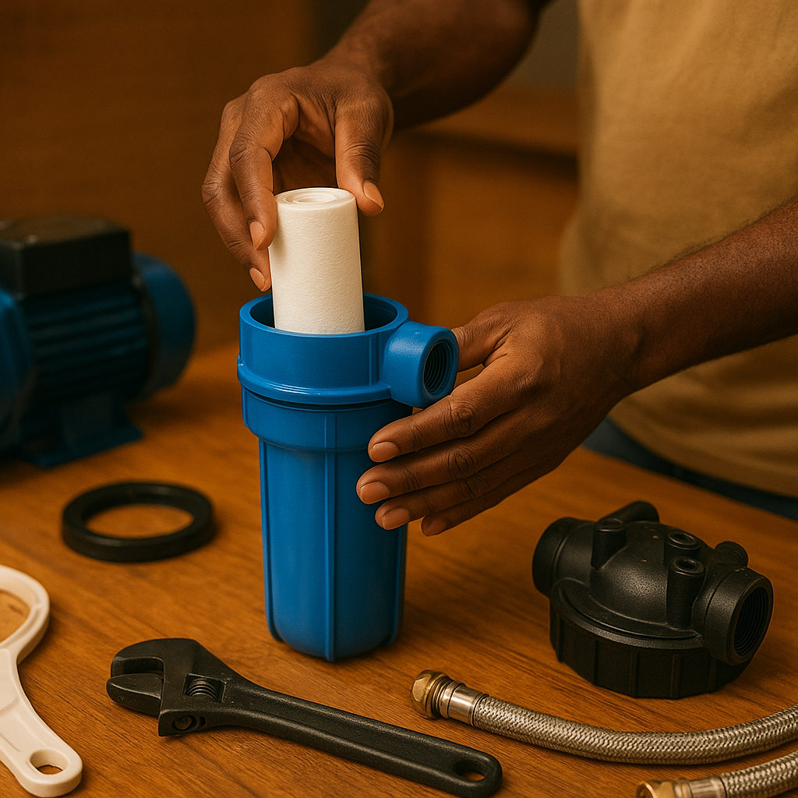
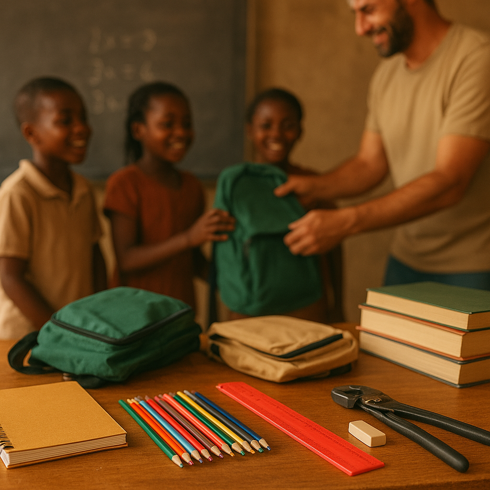
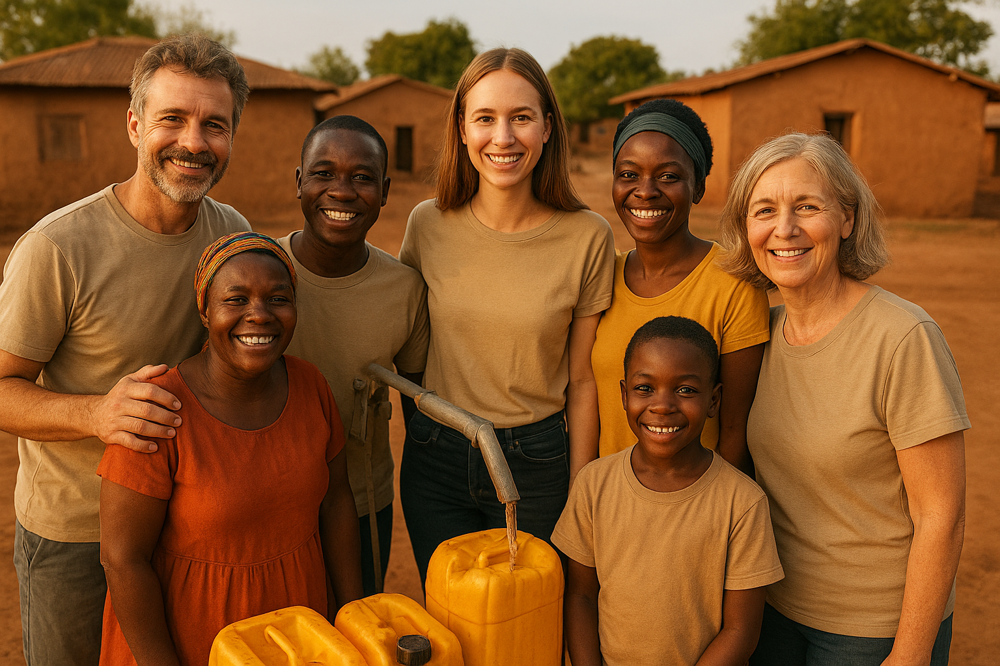

Projetos
Segurança Alimentar
Distribuição de cestas e treinamento em cultivo local.
Água Potável
Construímos poços e estações de tratamento locais.
Educação
Material didático e formação de professores.
Voluntariado
Junte-se a nós passe pelo cadastro e treinamento.